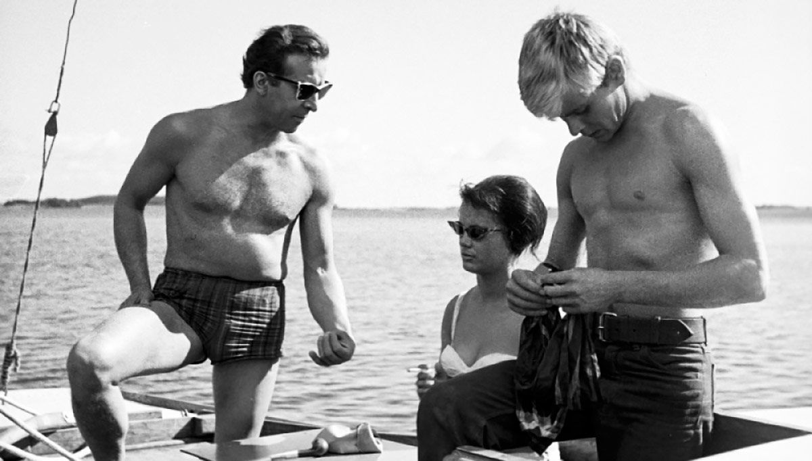
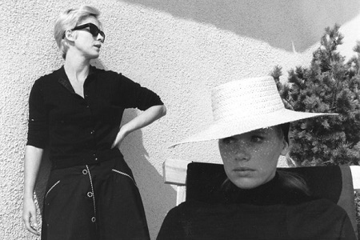

Sono nata il 28 Maggio 1997 a Schio, un piccolo paese nel Veneto in provincia di Vicenza. Nel Settembre 2017 mi sono finalmente trasferita a Milano, nel quartiere di Bovisa, per studiare Design degli Interni al Politecnico di Milano.
Interessi
Ho una grande passione per il Cinema, nata dal recuperare pellicole lontane nel tempo e cercando di imparare ad analizzare i film e ad acquisire una buona capacità critica. Così, l'ossessione di imparare le date di ogni film, di conoscere i nomi e le biografie di registi e attori mi ha portato ad un'ottima cultura filmica, che a lungo andare cresce sempre di più. Questo mio interesse si estende di conseguenza anche al mondo dell'Arte. Amo osservare, soffermarmi nei particolari ed immergermi in essi. Sono una persona meticolosa e perfezionista e cerco di catturare tutto ciò che mi emoziona. Anche per questo, il mio sogno è di poter viaggiare un giorno, avere la possibilità di vedere, scoprire, immergermi nei colori, nei paesaggi, nei visi, nelle strade e nelle culture, sempre nuovi.


Obiettivi
Ma ora passiamo a ciò che più mi entusiasma: l'Architettura e il Design. Se prima parlavo di emozioni, ecco qui che scatta qualcosa. L'Architettura è Arte e come ogni forma artistica ha qualcosa di impalpabile da comunicare, che ci emoziona. Ho sempre dato una capillare attenzione alle sensazioni che ogni posto genera dentro di noi. È davvero curioso come il Design condizioni fortemente il nostro comportamento e il nostro stato d'animo e tutto ciò è molto importante, considerando che passiamo la maggior parte del nostro tempo all'interno di edifici e spazi. È quindi fondamentale concentrarsi su tutti quei fattori che influenzano il nostro benessere e la qualità della nostra vita. È anche per questo, infatti, che miro ad approfondire le tematiche legate all'impatto ambientale della costruzione di edifici. D'altronde, fare oggi Architettura e Design deve coniugarsi con la loro sostenibilità ed è indispensabile avere una consapevolezza ecologica per limitarne gli effetti.